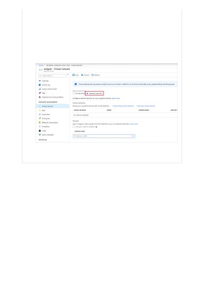
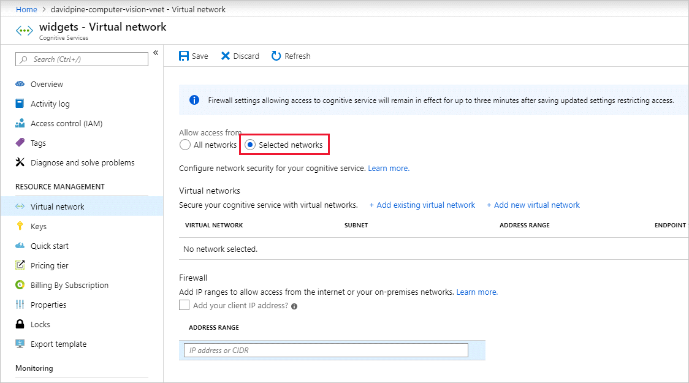

3. To deny access by default, choose to allow access from Selected networks.
With the Selected networks setting alone, unaccompanied by configured
Virtual networks or Address ranges - all access is effectively denied. When all
access is denied, requests attempting to consume the Cognitive Services
resource aren't permitted. The Azure portal, Azure PowerShell or, Azure CLI
can still be used to configure the Cognitive Services resource.
4. To allow traffic from all networks, choose to allow access from All networks.
5. Select Save to apply your changes.
You can configure Cognitive Services resources to allow access only from specific
subnets. The allowed subnets may belong to a VNet in the same subscription, or in a
different subscription, including subscriptions belonging to a different Azure Active
Directory tenant.
Enable a service endpoint for Azure Cognitive Services within the VNet. The service
endpoint routes traffic from the VNet through an optimal path to the Azure Cognitive
Services service. The identities of the subnet and the virtual network are also transmitted
with each request. Administrators can then configure network rules for the Cognitive
Services resource that allow requests to be received from specific subnets in a VNet.
Clients granted access via these network rules must continue to meet the authorization
requirements of the Cognitive Services resource to access the data.
Grant access from a virtual network